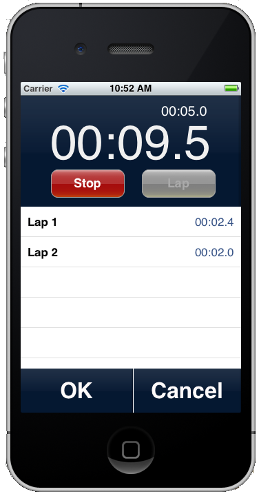

Reusable Lap Timer for iOS
Wed 03 October 2012 by Ben JacobsThe other day I needed to insert a Lap Timer into an existing iPhone application. Being the lazy programmer that I am, I first searched around online to see if anyone had already written a clean, reusable Lap Timer, but there was nothing. iDevices ship with the clock app, which includes a stopwatch function. I set about imitating its look and functionality.

Some specs about LapTimer:
- Uses NSDate to store accurate times.
- Uses NSTimer to refresh the labels on a millisecond basis, so you get to see those fun numbers counting up into infinity
- Creates a LapTimerProtocol, which an app could use to get "return values" from the LapTimerController
If all that sounds like fun, feel free to download the source and play around with it. The source code is offered without warranty or copyright. Do whatever you'd like with it. I make use of the UIButtonGlossy Class written by Michael Heyeck.